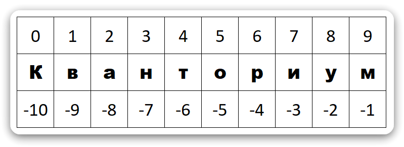
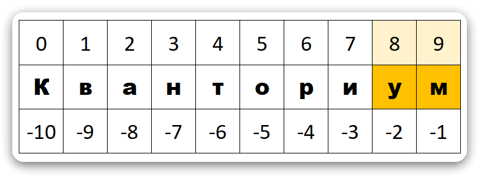
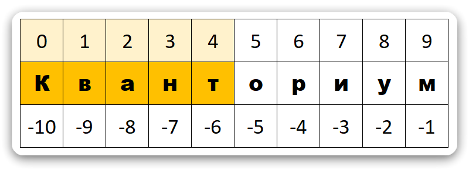
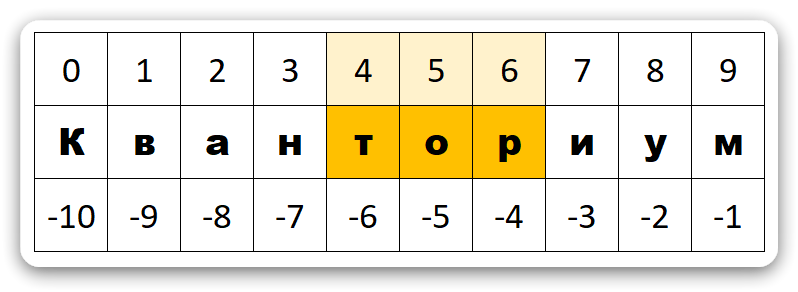
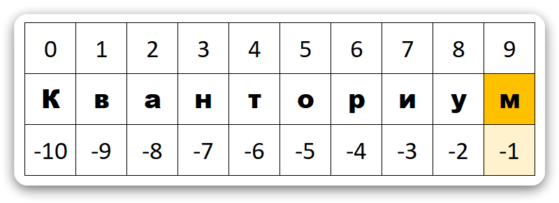
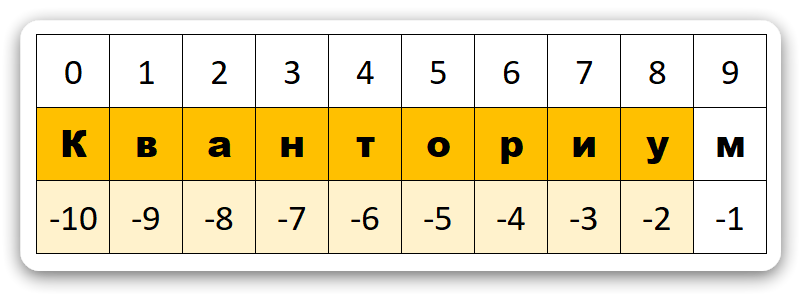
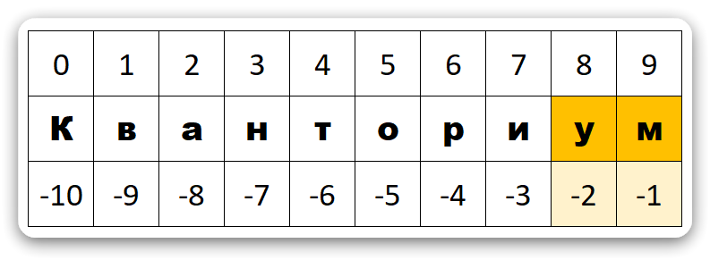
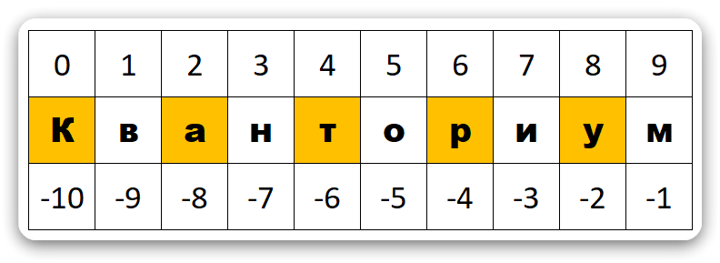

Срезы (Slice) в Python
Что такое срез
Что такое «срез»
Срез (slice) — это способ получить под-последовательность элементов списка, строки или другого индексируемого типа.
Синтаксис: seq[start:stop:step]
start— индекс, с которого начинается срез (включительно).stop— индекс, на котором срез заканчивается (не включая его!).step— шаг перебора (по умолчанию1).
Любой параметр можно опустить — Python подставит значение «по умолчанию».
Почему срезы удобны
- Получить фрагмент данных без циклов и условных конструкций.
- Заменить / удалить диапазон элементов одной операцией.
- Клонировать список простым
[:]. - Перевернуть последовательность:
[::-1].
Срезы можно применить как к спискам, так и к строкам

Python


name = "кванториум"
words = [ "к", "в", "а", "н", "т", "о", "р", "и", "у", "м" ]
print( name[8:] ) # ум
print( name[0:5] ) # квант
print( name[4:7] ) # тор
Индекс stop не включается!
name[0:5] берёт элементы 0 1 2 3 4; элемент с индексом 5 не попадает в результат
name[8:]
name[0:5]
name[4:7]
Отрицательные индексы
Python
name = "кванториум"
words = [ "к", "в", "а", "н", "т", "о", "р", "и", "у", "м" ]
print( name[-1:] ) # м
print( name[:-1] ) # кванториу
print( name[-2:] ) # му
-1 — последний элемент, -2 — предпоследний и т. д.
name[-1:]
name[:-1]
name[-2:]
Параметр step (шаг среза)
Python
name = "кванториум"
words = [ "к", "в", "а", "н", "т", "о", "р", "и", "у", "м" ]
print( name[::2] ) # катру
print( name[::-1] ) # муиротнавк
name[::2]
Совет: [::-1] быстрый способ перевернуть список / строку
Изменение части списка
Списки изменяемы, поэтому можно присваивать по срезу:
Python
numbers = [1, 2, 3, 4, 5]
numbers[1:4] = [20, 30] # заменяем 3 элемента двумя
print(numbers) # [1, 20, 30, 5]
numbers[:0] = [-2, -1, 0] # вставка в начало
print(numbers) # [-2, -1, 0, 1, 20, 30, 5]
Удалить диапазон можно так:
Python
del numbers[2:5]
print(numbers)